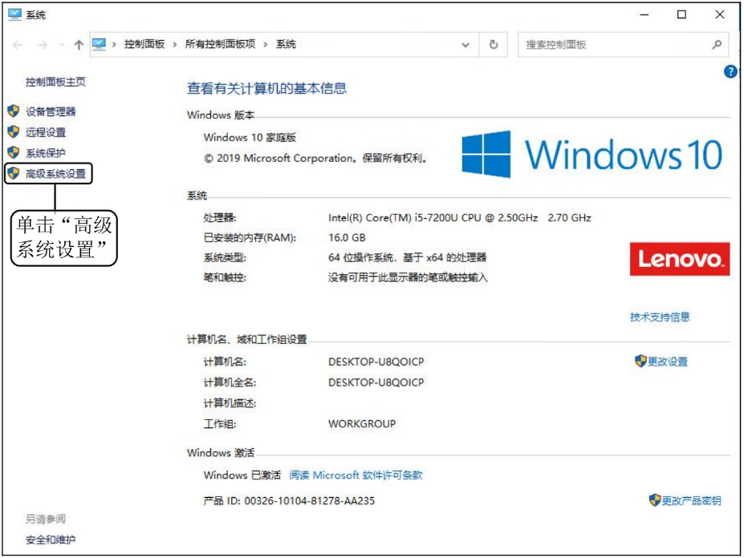
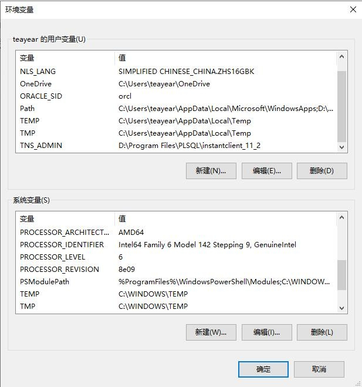
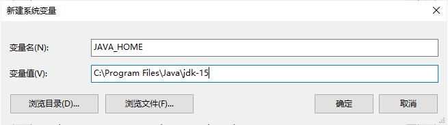
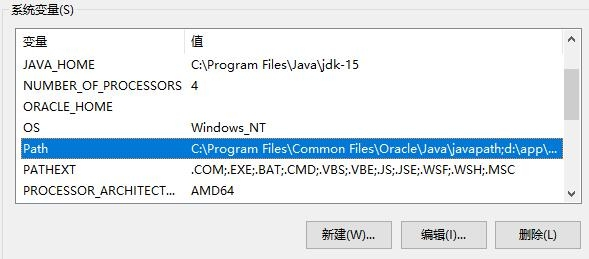
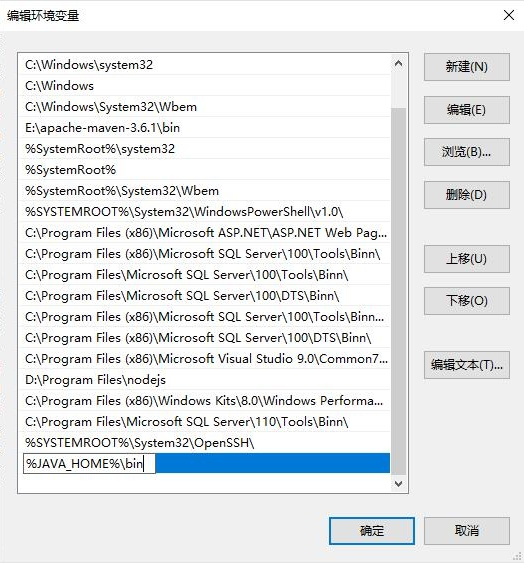

首页 > 编程笔记
JDK环境变量配置（图解）
在使用 JDK 来编译和运行程序之前，必须先设置好环境变量。所谓环境变量，就是在操作系统中定义的变量，可供操作系统上的所有应用程序使用。
Path 环境变量的作用是设置一个路径，由操作系统去寻找该路径下的文件（如 .bat、.ext、.com 等），对 Java 来说就是 Java 的安装路径。
下面以 Windows 10 操作系统为例说明，具体步骤如下：
1) 选择“控制面板→系统和安全→系统”（也可以在桌面上右击“此电脑”或“我的电脑”，在弹出的快捷菜单中选择“属性”命令），进入系统窗口，如图5所示。
2) 单击“高级系统设置”选项，弹出“系统属性”对话框，如图6所示。

图6：“系统属性”对话框
3) 单击“环境变量”按钮，弹出 “环境变量”对话框，如图7所示。
4) 在“环境变量”对话框的“系统变量”区域中，单击“新建”按钮，打开“新建系统变量”对话框。并在“变量名”文本框中输入
笔者此时的安装目录为
5) 在“环境变量”对话框的“系统变量”区域中选中系统变量 Path，如图9所示。
6) 在图9所示的对话框单击“编辑”按钮，打开“编辑环境变量”对话框，单击“新建”按钮，在编辑页面的文本框中添加
这里配置 JAVA_HOME 的好处是，当 JDK 的版本或安装路径发生变化时，只需要修改 JAVA_HOME 的值，而不用修改 Path 环境变量的值。
个别教程中会提到 Classpath 环境变量，Classpath 环境变量的作用与 Path 环境变量的作用类似，它是 JVM 执行 Java 程序时搜索类的路径的顺序，以最先找到为准。JDK 1.5 之后，如果没有设置 Classpath 环境变量，则 Java 解释器会在当前路径下搜索 Java 类，故本教程不再赘述。
Path 环境变量的作用是设置一个路径，由操作系统去寻找该路径下的文件（如 .bat、.ext、.com 等），对 Java 来说就是 Java 的安装路径。
下面以 Windows 10 操作系统为例说明，具体步骤如下：
1) 选择“控制面板→系统和安全→系统”（也可以在桌面上右击“此电脑”或“我的电脑”，在弹出的快捷菜单中选择“属性”命令），进入系统窗口，如图5所示。

图5：Windows 10 系统窗口
图5：Windows 10 系统窗口
2) 单击“高级系统设置”选项，弹出“系统属性”对话框，如图6所示。
图6：“系统属性”对话框
3) 单击“环境变量”按钮，弹出 “环境变量”对话框，如图7所示。

图7：“环境变量”对话框
图7：“环境变量”对话框
4) 在“环境变量”对话框的“系统变量”区域中，单击“新建”按钮，打开“新建系统变量”对话框。并在“变量名”文本框中输入
JAVA_HOME，在“变量值”文本框中输入 JDK 安装目录。笔者此时的安装目录为
C:\Program Files\Java\jdk-15，如图8所示。单击“确定”按钮，完成 JAVA_HOME 环境变量的配置。

图8：“新建系统变量”对话框
图8：“新建系统变量”对话框
5) 在“环境变量”对话框的“系统变量”区域中选中系统变量 Path，如图9所示。

图9：“环境变量”对话框选中 Path 变量
图9：“环境变量”对话框选中 Path 变量
6) 在图9所示的对话框单击“编辑”按钮，打开“编辑环境变量”对话框，单击“新建”按钮，在编辑页面的文本框中添加
%JAVA_HOME%\bin，如图10所示。然后单击“确定”按钮，保存环境变量，完成配置。

图10：“编辑环境变量”对话框
图10：“编辑环境变量”对话框
温馨提示
在配置 Path 环境变量时，JAVA_HOME 环境变量并不是一定需要配置的，我们也可以直接将 JDK 的安装路径（C:\Program Files\Java\JDK-15\bin）添加到 Path 环境变量中。这里配置 JAVA_HOME 的好处是，当 JDK 的版本或安装路径发生变化时，只需要修改 JAVA_HOME 的值，而不用修改 Path 环境变量的值。
个别教程中会提到 Classpath 环境变量，Classpath 环境变量的作用与 Path 环境变量的作用类似，它是 JVM 执行 Java 程序时搜索类的路径的顺序，以最先找到为准。JDK 1.5 之后，如果没有设置 Classpath 环境变量，则 Java 解释器会在当前路径下搜索 Java 类，故本教程不再赘述。
关注公众号「站长严长生」，在手机上阅读所有教程，随时随地都能学习。内含一款搜索神器，免费下载全网书籍和视频。

微信扫码关注公众号